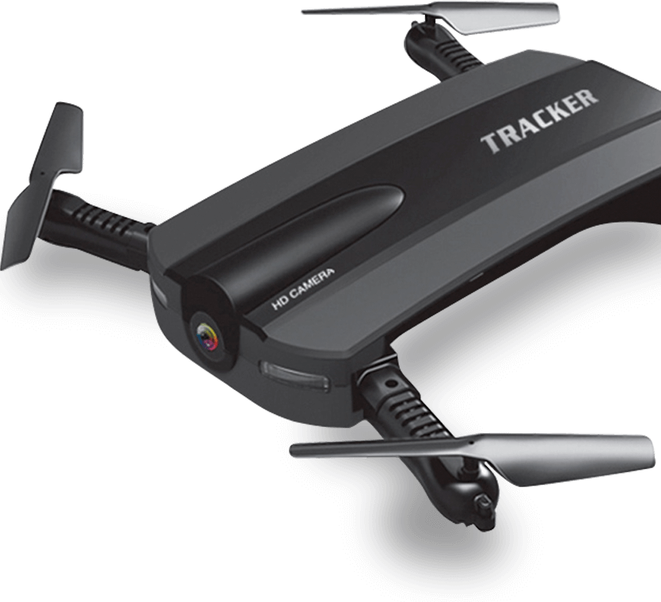

Your Receptionist Anywhere
When a user taps on a button in a mobile app, and the button pulls down a navigation, that’s a microinteraction.
Super Light Drone
The first good thing about microinteractions is improved usability. If the animation of the menu, from the example I gave above, slides down and over the content the user was just looking at, it provides affirmation for the user. This animation lets the user know what’s going on through visual cues.
More specifically, microinteractions are the animations and changes of the interface that happen once a user interacts with something, anything. Consider them interactive but informative animations. There are many reasons to use microinteractions. I can give you four right now.
Super Services
The first good thing about microinteractions is improved usability. If the animation of the menu, from the example I gave above, slides down and over the content the user was just looking at, it provides affirmation for the user.
4K RESOLUTION
More specifically, microinteractions are the animations and changes of the interface that happen once a user interacts with something, anything. Consider them interactive but informative animations. There are many reasons to use microinteractions. I can give you four right now.